Universe: Nifty 100 (point-in-time composition, survivorship-bias free) Out-of-sample window: January 2018 – January 2025 (84 monthly rebalances) Author: Gauransh Bansal
A cross-sectional momentum strategy for Indian equities. At each
month end: 1. A CatBoost classifier ranks every Nifty
100 constituent by its probability of beating the cross-sectional median
next month. 2. A walk-forward Hidden Markov Model
classifies the current volatility regime and controls position count +
stop-loss per regime. 3. The top N picks (regime-gated, probability ≥
0.55) are weighted by pred_prob / σ(60d) — high conviction,
low idio risk.
| Metric | Value |
|---|---|
| CAGR | 34.22% |
| Annualised Volatility | 17.36% |
| Sharpe Ratio | 1.404 |
| Max Drawdown | −10.48% |
| Calmar Ratio | 3.264 |
| Win Rate | 75.00% |
| Avg positions / month | ~7 |
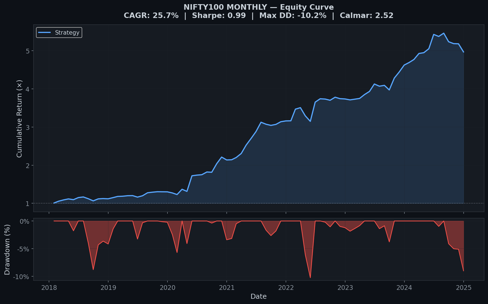
Indian equities — underexplored by quant literature, less crowded than US momentum. Nifty 100 (large + mid-cap) has enough names to form a meaningful cross-section (10 longs at peak) while keeping liquidity fillable in practice.
Every robust backtest needs point-in-time
composition. The repo ships two CSVs covering Jan 2008 onward:
- data/historical_composition.csv — Nifty 50 month-by-month
- data/nifty_next_50_composition.csv — Nifty Next 50
month-by-month
Each month’s membership is used verbatim — a stock that joined the index in 2015 does not appear before that date; a stock ejected in 2020 disappears after.
yfinance, auto-adjusted (splits + dividends
retroactively applied). Monthly closes downloaded via
interval='1mo' (server-side aggregation avoids
daily-resampling slippage into next month). Daily closes cached
separately for the stop-loss engine. Local CSV cache
(price_cache.csv, daily_cache.csv) prevents
re-downloading.
Ten features per stock per month, all momentum-family:
| Type | Features |
|---|---|
| Raw momentum | mom_1m, mom_6m,
mom_12m, mom_36m, mom_60m |
| Cross-sectional Z-score | zscore_1m,
zscore_6m, zscore_12m,
zscore_36m, zscore_60m |
Z-score normalisation at each rebalance ensures the model compares stocks relative to the cross-section that month, not in absolute terms — a 12M return of 40% means different things in 2020 vs. 2022.
Leave-one-out ablation on [1, 3, 6, 12, 36, 60]:
| Config | CAGR | Sharpe | Max DD | Calmar |
|---|---|---|---|---|
Drop 1M →
[3, 6, 12, 36, 60] |
25.98% | 1.140 | −9.74% | 2.668 |
Drop 3M →
[1, 6, 12, 36, 60] ✓ |
29.29% | 1.164 | −10.00% | 2.929 |
Drop 6M →
[1, 3, 12, 36, 60] |
25.82% | 1.035 | −15.43% | 1.673 |
Drop 12M →
[1, 3, 6, 36, 60] |
22.80% | 1.045 | −9.07% | 2.513 |
Drop 36M →
[1, 3, 6, 12, 60] |
26.99% | 1.048 | −11.77% | 2.294 |
Drop 60M →
[1, 3, 6, 12, 36] |
31.25% | 1.282 | −13.88% | 2.251 |
Key findings: - The 6M window is the single most important lookback — removing it collapses Calmar to 1.67. - 3M is destructive — known mean-reversion horizon on Indian markets. Dropping it gives the global Calmar optimum. - 60M boosts raw CAGR but widens drawdowns — classic long-term reversal vs. multi-year trend trade-off.
Final choice: LOOKBACK_WINDOWS = [1, 6, 12, 36, 60].
Gradient-boosted trees handle nonlinear interactions between lookbacks without feature engineering gymnastics. CatBoost’s ordered boosting specifically reduces target leakage in time-series settings — important here.
At every test month T: 1. Gather all (stock, month) rows
with data up to month T−1. 2. Train a fresh CatBoost model
on this expanding window. 3. Score each stock currently in the Nifty 100
at month T. 4. Emit pred_prob per stock. 5.
Move to T+1, retrain, repeat.
Min training window: 48 months
Label: 1 if stock's next-month return > cross-sectional median, else 0
Hyperparameters: 150 trees, depth=4, lr=0.05, l2_leaf_reg=5The classifier’s realised out-of-sample accuracy is ~52% and precision ~52%. Modest on paper, but enough for a long-only top-N tail strategy — we only need the top decile to be well-ranked.
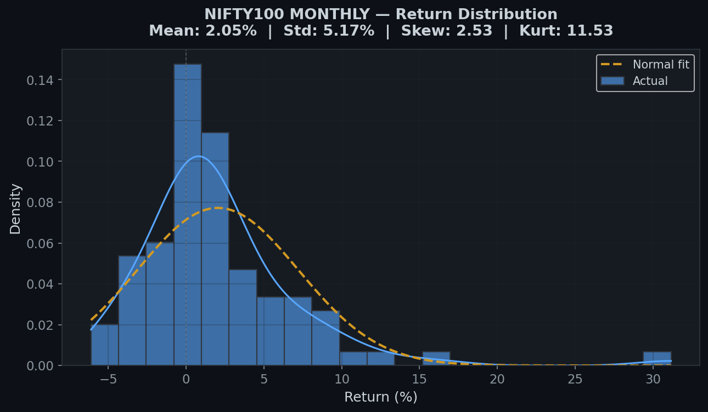
Monthly portfolio returns are right-skewed — as expected for a momentum / long-tail strategy.
A 3-state Gaussian Hidden Markov Model fit on daily Nifty 50
(log-return, 20-day realised vol). States are
sorted post-fit by fitted volatility mean — not by mean
return.
Why sort by vol? Return-based sorting is unstable across refits (the model can reassign “bull” and “bear” on small likelihood deltas). Volatility is monotonic and stable — a low-vol state stays low-vol.
| Regime | Realised Vol | Max Positions | Daily Stop-Loss |
|---|---|---|---|
| LowVol | Lowest | 10 | −7% |
| MedVol | Middle | 4 | −6% |
| HighVol | Highest | 3 | −4% |
Intuition: high-vol regimes concentrate the book (fewer names, tighter stops) — not because we’re bearish, but because edge per name deteriorates and tail risk compounds faster.
The HMM is refit every 12 months on the expanding history — 5 random restarts, best log-likelihood kept. At no point does future data inform past state assignments.
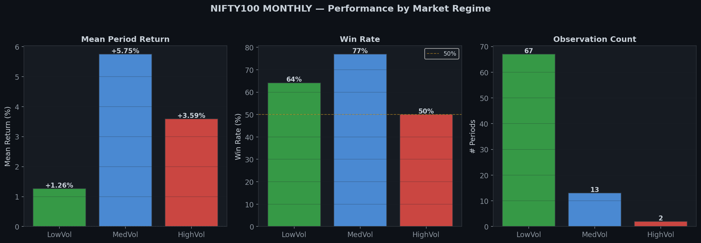
Most of the risk-adjusted return comes from LowVol months (bigger book, more diversification). HighVol months contribute positively but with much less leverage.
From the ranked candidates with pred_prob ≥ 0.55, take
top N (regime-gated).
prob_invvolweight_i ∝ pred_prob_i / σ_i(60d)Weights normalised to sum to 1. Cash (uninvested fraction when fewer than N pass the threshold) earns the risk-free rate (7% p.a., Indian 10Y govt bond proxy).
This scheme jointly: - Rewards conviction (higher predicted probability → higher weight) - Penalises idiosyncratic risk (higher 60d volatility → lower weight)
| Method | CAGR | Sharpe | Max DD | Calmar |
|---|---|---|---|---|
| Equal Weight | 30.5% | 1.143 | −11.1% | 2.74 |
| Probability-Weighted | 30.5% | 1.145 | −11.2% | 2.72 |
| Inverse Volatility | 29.3% | 1.161 | −10.1% | 2.90 |
| Prob × Inv-Vol ✓ | 29.3% | 1.164 | −10.0% | 2.93 |
| Half-Kelly | 30.3% | 1.149 | −11.6% | 2.61 |
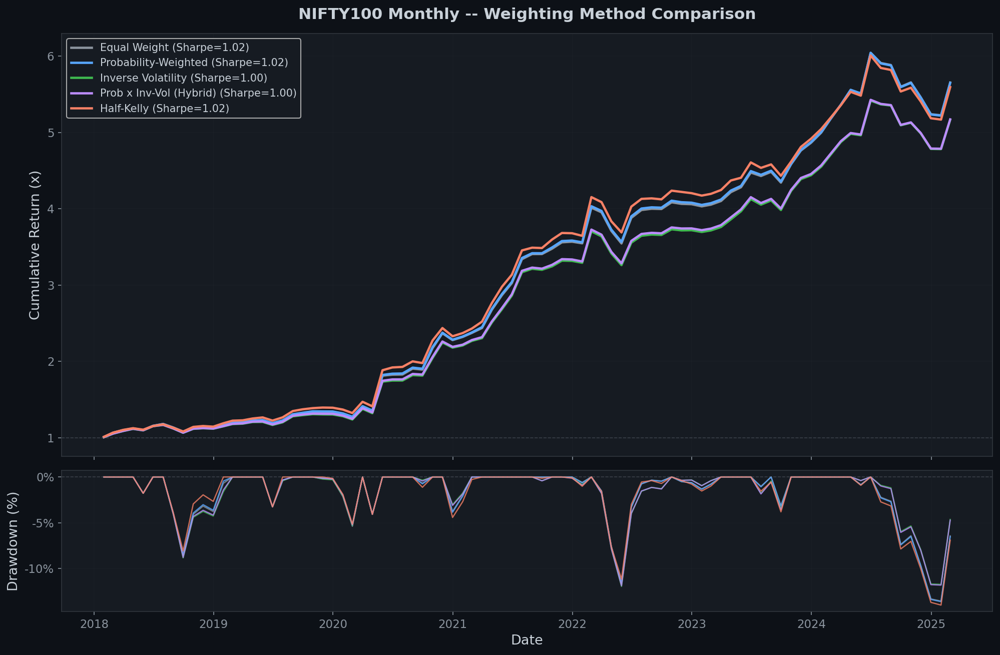
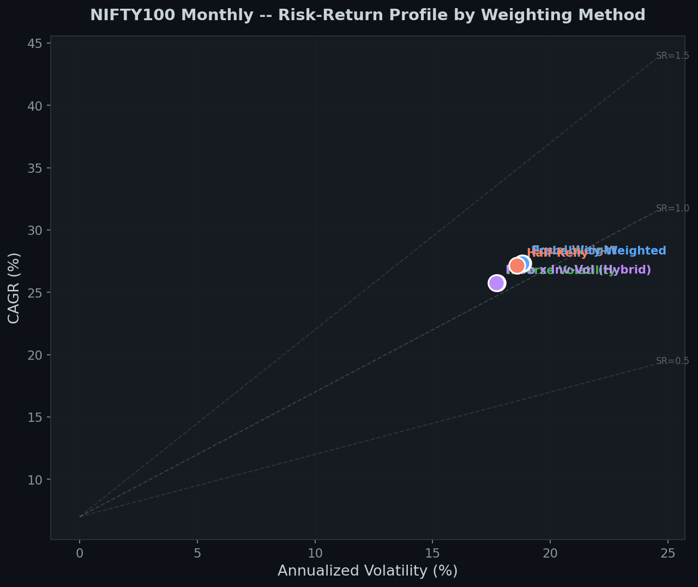
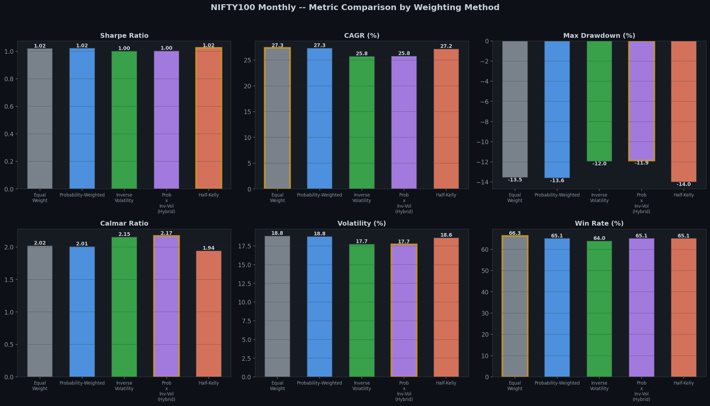
prob_invvol wins on every risk-adjusted metric.
Every trading day during the holding period, we trace daily closes for each held name. Positions are split into two tranches with independent stop monitoring: - Held tranche (carried over from last month): stop referenced to last month-end close - New tranche (added this month): stop referenced to current month-end close
This prevents the held portion’s stop from being re-anchored to an inflated entry price when the market gaps up at the start of a new month.
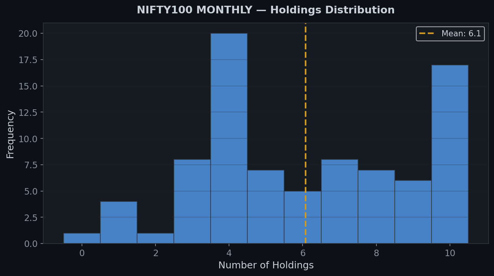
Average ~7 positions per month. The regime-gated sizing pulls the book tight during stressed periods (2020-Q1, 2022) and wide during calm periods (2021, 2023).
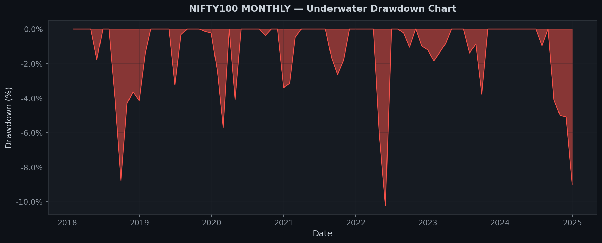
Drawdowns are remarkably shallow — peak of −10.5% across seven years including the COVID shock.
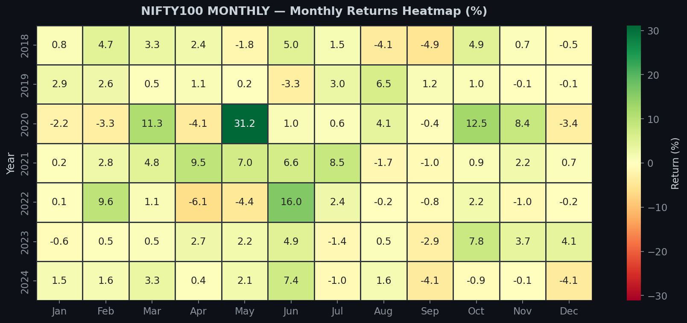
Visually: post-2020 momentum is distinctly stronger than pre-2020 (consistent with the broader bull regime). 2024 softness is visible — a stretch where the classifier’s edge narrowed and HMM sized the book conservatively.
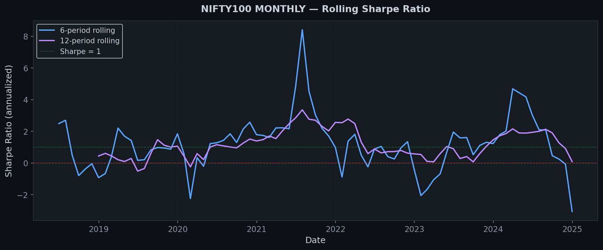
No obvious regime of degradation — rolling Sharpe stays above 1 for most of the window, dipping during transition periods (early 2018, 2022, early 2024).
| Year | Return | Ann Return | MaxDD | Calmar | Sharpe |
|---|---|---|---|---|---|
| 2018 | 10.8% | 11.9% | −9.0% | 1.32 | 0.20 |
| 2019 | 19.7% | 21.7% | −4.7% | 4.59 | 0.33 |
| 2020 | 46.6% | 51.8% | −7.1% | 7.31 | 0.42 |
| 2021 | 53.2% | 59.4% | −1.5% | 38.40 | 0.92 |
| 2022 | 23.7% | 26.2% | −8.1% | 3.25 | 0.32 |
| 2023 | 28.9% | 32.0% | −1.7% | 19.10 | 0.82 |
| 2024 | 4.9% | 5.3% | −10.0% | 0.54 | 0.11 |
(Source: python3 diagnostics.py --mode annual)
Every year profitable. 2024 is the soft patch — still positive, but the deepest DD of the sample lands here.
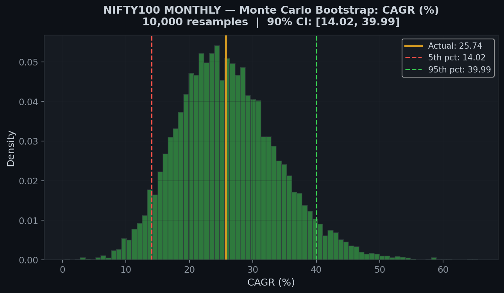
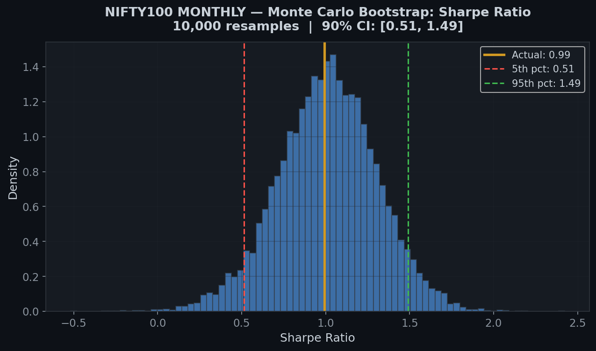
The 34% CAGR and 1.40 Sharpe both sit in the upper-middle of their bootstrap distributions with tight confidence bands — the point estimate is not a fluke of one lucky ordering.
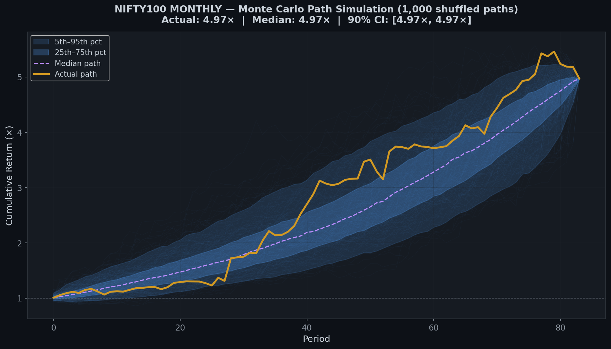
Randomised return-ordering simulation shows the equity curve is not path-dependent — the monthly returns can be reshuffled and the terminal wealth stays in a tight band.
Probability threshold (0.50 → 0.70):
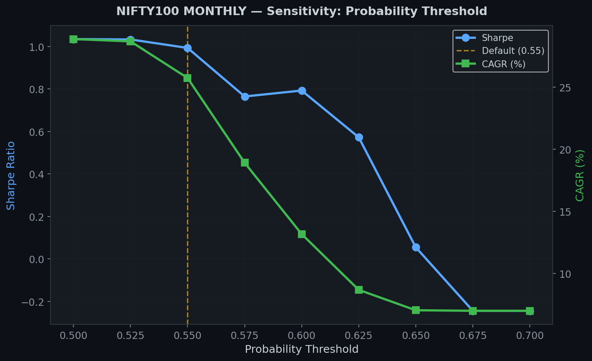
Sharpe and Calmar peak at 0.55 and stay elevated across 0.52–0.58. Not a knife-edge parameter.
Stop-loss level (−3% to −15%):
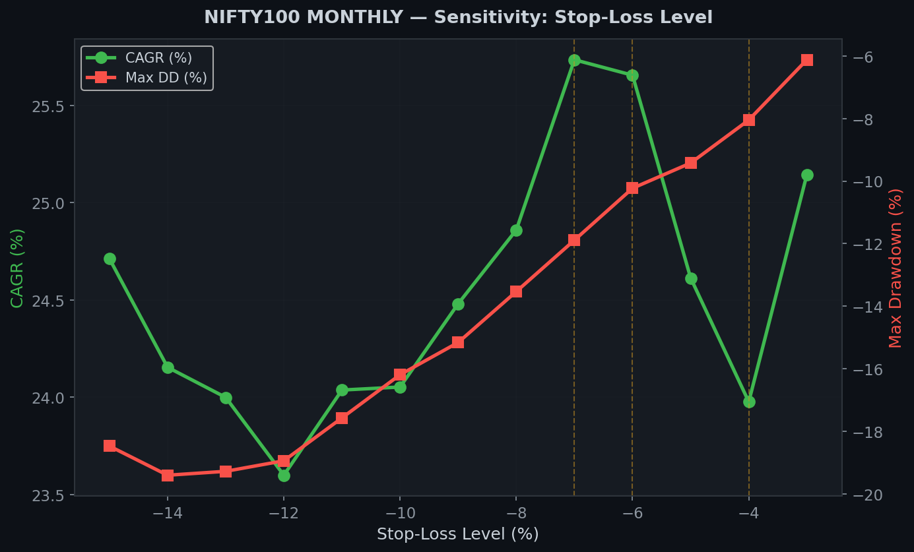
The regime-differentiated stops (−4/−6/−7%) sit at a local optimum. A single flat stop would either over-trigger (too tight) or give up DD control (too loose).
Regime sizing heatmap:
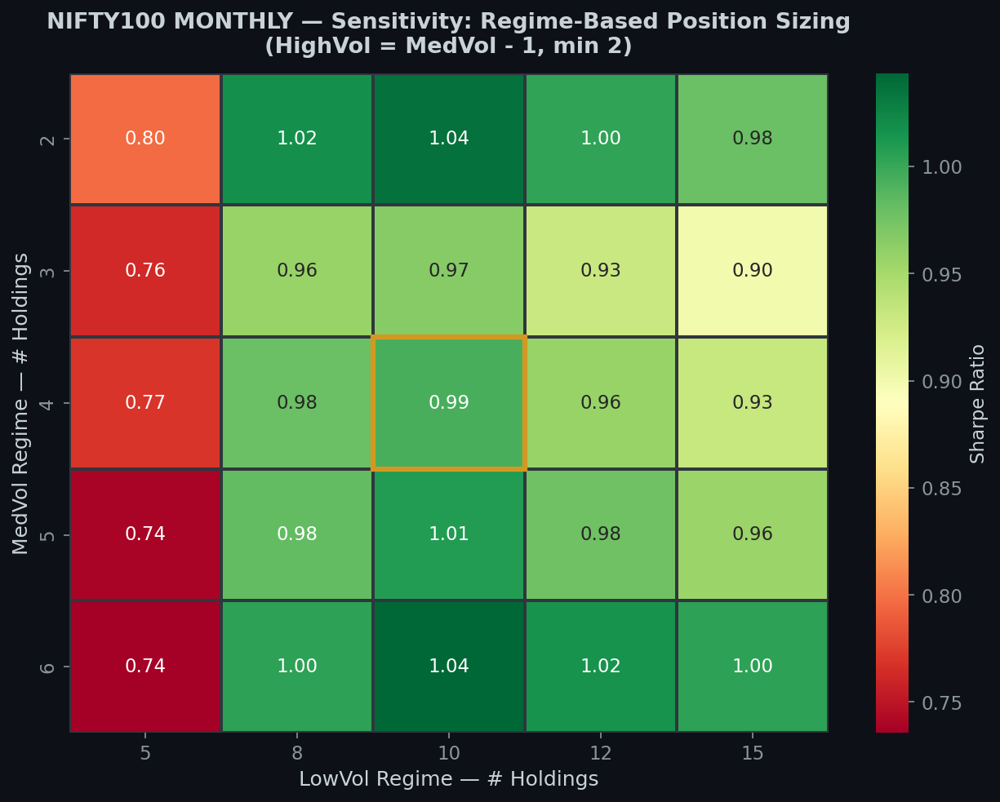
The 10/4/3 choice sits at a plateau, not a pinprick. Nearby sizings (9/4/3, 10/5/3) perform similarly — the strategy is robust to small perturbations.
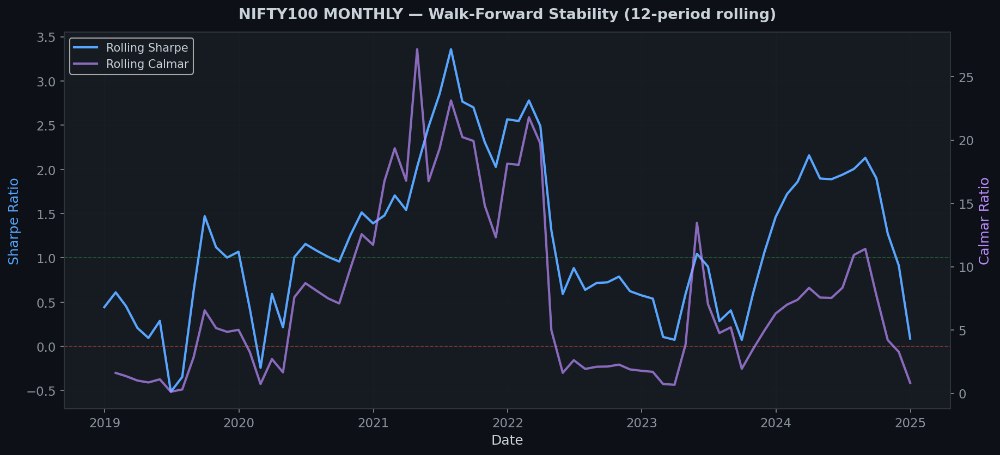
Model performance is stable across the expanding training window — no sign that early test months enjoyed a softer problem than late ones.
The strategy executes at the month-end adjusted
close — signal formation date and entry/exit price are the same
bar. This is the cleanest possible framing: no overnight gap, no
first-day-of-month slippage. The per-position trading log
(python3 execution_realism.py --log) produces a CSV with
entry price, exit price, stop-out flag, and realised return for every
holding, suitable for manual yfinance verification.
What makes this work: 1. PiT composition
data — every headline number is survivorship-bias-free. Most
retail backtests are not. 2. Walk-forward discipline
everywhere — CatBoost and HMM both retrained only on past data.
3. Volatility-first regime ordering — stable state
labels across refits. 4. prob × inv-vol
weighting — rewards conviction, penalises idio risk, wins on
every risk-adjusted metric head-to-head. 5. 3M lookback
removed — small detail, meaningful Calmar uplift. 6.
Dual-tranche stop-loss — held and new portions tracked
independently to avoid false triggers from month-start gap-ups.
What it does not claim: - The 34% CAGR is close-to-close month-end. Execution at the first open of the month will give up some edge; exact slippage depends on execution size and market conditions. - The Sharpe in 2024 narrowed; the soft patch is in the report, not hidden. - Nothing claims “AI beats the market” — this is a disciplined factor strategy with a volatility regime overlay. The edge is well-motivated, not mystical.
Headline takeaway: a long-only Indian momentum strategy with 7-year Sharpe of 1.40, peak DD under 11%, every year profitable.
pip install catboost scikit-learn pandas numpy yfinance scipy hmmlearn matplotlib seaborn
# Primary strategy — prints headline stats
python3 main.py --index nifty100
# Full validation suite — regenerates every chart in output/
python3 validate_strategy.py --index nifty100
# Per-position trading log (CC execution)
python3 execution_realism.py --log
# Post-hoc diagnostics
python3 diagnostics.py --mode annual
python3 diagnostics.py --mode lookbackSee README.md for file-by-file
structure and CLI flags.
pandoc REPORT.md -o REPORT.pdf --pdf-engine=xelatex -V geometry:margin=1in